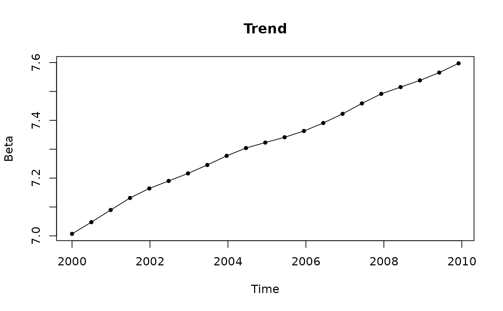
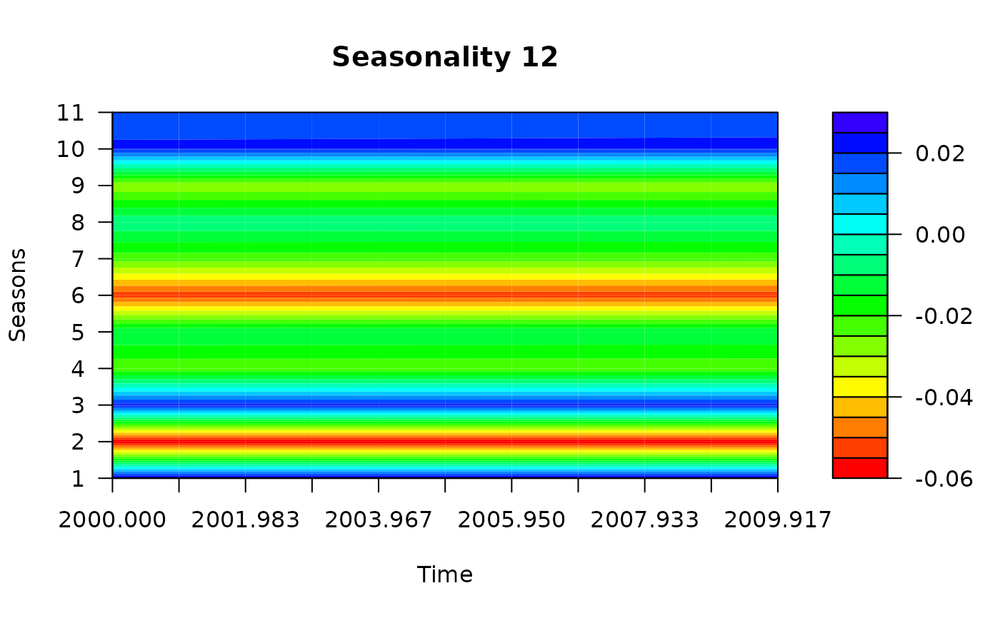
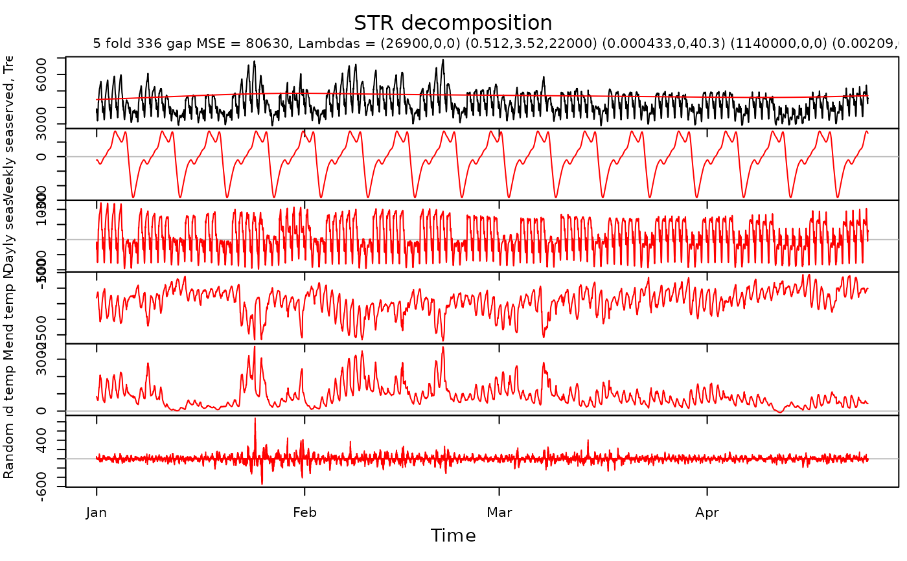

plotBeta plots the varying beta coefficients of STR decomposition.
It plots coefficients only only for independent seasons (one less season than defined).
Arguments
- x
Result of STR decomposition.
- xTime
Times for data to plot.
- predictorN
Predictor number in the decomposition to plot the corresponding beta coefficiets.
- dim
Dimensions to use to plot the beta coefficients. When
1, the standard charts are used. When2,graphics:::filled.contourfunction is used. When3,rgl:::persp3dis used. The default value is1.- type
Type of the graph for one dimensional plots.
- pch
Symbol code to plot points in 1-dimensional charts. Default value is
20.- palette
Color palette for 2 - and 3 - dimentional plots.
Examples
# \donttest{
fit <- AutoSTR(log(grocery))
for (i in 1:2) plotBeta(fit, predictorN = i, dim = 2)


########################################
TrendSeasonalStructure <- list(
segments = list(c(0, 1)),
sKnots = list(c(1, 0))
)
DailySeasonalStructure <- list(
segments = list(c(0, 48)),
sKnots = c(as.list(1:47), list(c(48, 0)))
)
WeeklySeasonalStructure <- list(
segments = list(c(0, 336)),
sKnots = c(as.list(seq(4, 332, 4)), list(c(336, 0)))
)
WDSeasonalStructure <- list(
segments = list(c(0, 48), c(100, 148)),
sKnots = c(as.list(c(1:47, 101:147)), list(c(0, 48, 100, 148)))
)
TrendSeasons <- rep(1, nrow(electricity))
DailySeasons <- as.vector(electricity[, "DailySeasonality"])
WeeklySeasons <- as.vector(electricity[, "WeeklySeasonality"])
WDSeasons <- as.vector(electricity[, "WorkingDaySeasonality"])
Data <- as.vector(electricity[, "Consumption"])
Times <- as.vector(electricity[, "Time"])
TempM <- as.vector(electricity[, "Temperature"])
TempM2 <- TempM^2
TrendTimeKnots <- seq(from = head(Times, 1), to = tail(Times, 1), length.out = 116)
SeasonTimeKnots <- seq(from = head(Times, 1), to = tail(Times, 1), length.out = 24)
SeasonTimeKnots2 <- seq(from = head(Times, 1), to = tail(Times, 1), length.out = 12)
TrendData <- rep(1, length(Times))
SeasonData <- rep(1, length(Times))
Trend <- list(
name = "Trend",
data = TrendData,
times = Times,
seasons = TrendSeasons,
timeKnots = TrendTimeKnots,
seasonalStructure = TrendSeasonalStructure,
lambdas = c(1500, 0, 0)
)
WSeason <- list(
name = "Weekly seas",
data = SeasonData,
times = Times,
seasons = WeeklySeasons,
timeKnots = SeasonTimeKnots2,
seasonalStructure = WeeklySeasonalStructure,
lambdas = c(0.8, 0.6, 100)
)
WDSeason <- list(
name = "Dayly seas",
data = SeasonData,
times = Times,
seasons = WDSeasons,
timeKnots = SeasonTimeKnots,
seasonalStructure = WDSeasonalStructure,
lambdas = c(0.003, 0, 240)
)
TrendTempM <- list(
name = "Trend temp Mel",
data = TempM,
times = Times,
seasons = TrendSeasons,
timeKnots = TrendTimeKnots,
seasonalStructure = TrendSeasonalStructure,
lambdas = c(1e7, 0, 0)
)
TrendTempM2 <- list(
name = "Trend temp Mel^2",
data = TempM2,
times = Times,
seasons = TrendSeasons,
timeKnots = TrendTimeKnots,
seasonalStructure = TrendSeasonalStructure,
lambdas = c(0.01, 0, 0)
) # Starting parameter is too far from the optimal value
Predictors <- list(Trend, WSeason, WDSeason, TrendTempM, TrendTempM2)
elec.fit <- STR(
data = Data,
predictors = Predictors,
gapCV = 48 * 7
)
plot(elec.fit,
xTime = as.Date("2000-01-11") + ((Times - 1) / 48 - 10),
forecastPanels = NULL
)

plotBeta(elec.fit, predictorN = 4)
plotBeta(elec.fit, predictorN = 5) # Beta coefficients are too "wiggly"
# }